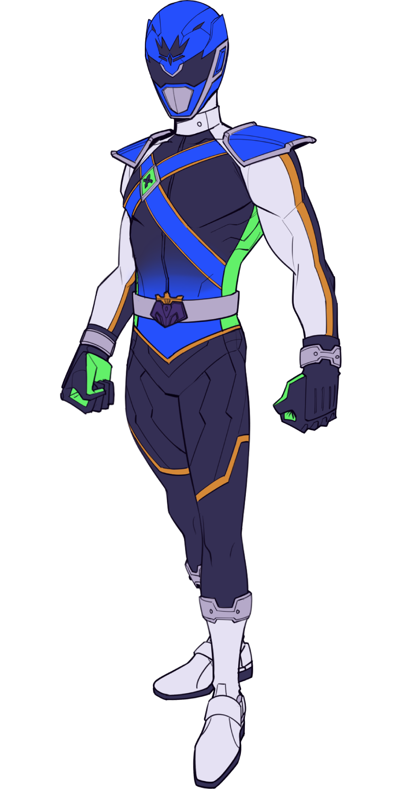

The brillance of Daeon shows itself as strategic brillance with the Starlit Czar. He formulates tactics that regularly see the Starlite 7th to victory; the typical cause of a (rare) S7 loss are either Czar being taken out of combat before finishing a plan or being altogether absence from the conflict. Starlit Czar wields the Royal Gauntlets using the training Daeon underwent as a boxer. The gauntlets have a special ability Teleport Punch attack, which completely offsets the presumed lack of range Czar has as a close combat specialist.